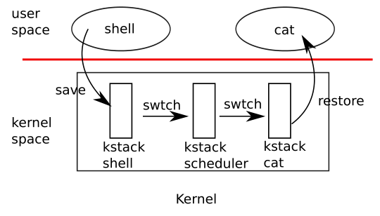

暂时结束了对操作系统虚拟化方面的一些探讨，Lab7和Lab8主要是对操作系统并发的专题学习。其中Lab7的主题是多线程。
在xv6中，线程调度的过程还是很值得探讨的。
xv6中线程调度的过程大概如下所示：
- 首先是用户线程接收到了时钟中断，强迫CPU从用户空间进程切换到内核，同时在 trampoline 代码中，保存当前寄存器状态到 trapframe 中；
- 在 usertrap 处理中断时，切换到了该进程对应的内核线程；
- 内核线程在内核中，先做一些操作，然后调用 swtch 函数，保存用户进程对应的内核线程的寄存器至 context 对象；
- swtch 函数并不是直接从一个内核线程切换到另一个内核线程；而是先切换到当前 cpu 对应的调度器线程，之后就在调度器线程的 context 下执行 schedulder 函数中；
- schedulder 函数会再次调用 swtch 函数，切换到下一个内核线程中，由于该内核线程肯定也调用了 swtch 函数，所以之前的 swtch 函数会被恢复，并返回到内核线程所对应进程的系统调用或者中断处理程序中。
- 当内核程序执行完成之后，trapframe 中的用户寄存器会被恢复，完成线程调度。

线程调度的过程主要是保存 context 上下文状态，因为这里的切换全都是以函数调用的形式，因此这里只需要保存被调用者保存的寄存器（Callee-saved register）即可，调用者的寄存器会自动保存在trapframe中。
至于为什么scheduler函数需要一个专门的线程来运行，是为了防止在线程调度中进程被其他进程唤醒，最后可能会导致两个进程拥有同样的堆栈，总之是复杂的并发问题。
回到实验，本实验总共有三个任务，但后两个任务和xv6的关系不是很大。前置知识是阅读xv6book的第7章并且学习一些并发编程的知识。
Uthread: switching between threads
这个任务的目的是实现一个用户态的线程调度方法，多个线程也只能运行在一个 CPU 上，并且没有时钟中断来强制执行调度，需要线程函数本身在合适的时候主动 yield 释放 CPU。
根据实验的提示，我们首先完成上下文切换，也就是完成uthread_switch.S，这里可以直接参考或者复制swtch.S
.text
/*
* save the old thread's registers,
* restore the new thread's registers.
*/
.globl thread_switch
thread_switch:
/* YOUR CODE HERE */
sd ra, 0(a0)
sd sp, 8(a0)
sd s0, 16(a0)
sd s1, 24(a0)
sd s2, 32(a0)
sd s3, 40(a0)
sd s4, 48(a0)
sd s5, 56(a0)
sd s6, 64(a0)
sd s7, 72(a0)
sd s8, 80(a0)
sd s9, 88(a0)
sd s10, 96(a0)
sd s11, 104(a0)
ld ra, 0(a1)
ld sp, 8(a1)
ld s0, 16(a1)
ld s1, 24(a1)
ld s2, 32(a1)
ld s3, 40(a1)
ld s4, 48(a1)
ld s5, 56(a1)
ld s6, 64(a1)
ld s7, 72(a1)
ld s8, 80(a1)
ld s9, 88(a1)
ld s10, 96(a1)
ld s11, 104(a1)
ret /* return to ra */然后从 proc.h 中复制一下 context 结构体内容，用于保存 ra、sp 以及 callee-saved registers：
struct context {
uint64 ra;
uint64 sp;
// callee-saved
uint64 s0;
uint64 s1;
uint64 s2;
uint64 s3;
uint64 s4;
uint64 s5;
uint64 s6;
uint64 s7;
uint64 s8;
uint64 s9;
uint64 s10;
uint64 s11;
};将上面定义的context结构体添加到thread结构体中：
struct thread {
char stack[STACK_SIZE]; /* the thread's stack */
int state; /* FREE, RUNNING, RUNNABLE */
struct context contex;
};接着完善调度，因为是被调用者保存，所以我们switch的参数先后分别是当前进程和下一个进程：
void
thread_schedule(void)
{
// ...................
if (current_thread != next_thread) { /* switch threads? */
next_thread->state = RUNNING;
t = current_thread;
current_thread = next_thread;
/* YOUR CODE HERE
* Invoke thread_switch to switch from t to next_thread:
* thread_switch(??, ??);
*/
thread_switch((uint64)&t->contex, (uint64)¤t_thread->contex);
} else
next_thread = 0;
}最后完成一些线程初始化的信息就可以了：
void
thread_create(void (*func)())
{
struct thread *t;
for (t = all_thread; t < all_thread + MAX_THREAD; t++) {
if (t->state == FREE) break;
}
t->state = RUNNABLE;
// YOUR CODE HERE
t->contex.ra = (uint64)func;
t->contex.sp = (uint64)&t->stack + (STACK_SIZE - 1);
}任务一结束。
Using threads
这个任务的目的是通过加锁解决哈希表 race-condition 导致的数据丢失问题。
如果只加一把大锁，会导致性能丢失，所以我们要细化锁的粒度，改成在每个槽位加一把小锁。
pthread_mutex_t lock[NBUCKET];
static
void put(int key, int value)
{
int i = key % NBUCKET;
// is the key already present?
pthread_mutex_lock(&lock[i]);
struct entry *e = 0;
for (e = table[i]; e != 0; e = e->next) {
if (e->key == key)
break;
}
if(e){
// update the existing key.
e->value = value;
} else {
// the new is new.
insert(key, value, &table[i], table[i]);
}
pthread_mutex_unlock(&lock[i]);
}
static struct entry*
get(int key)
{
int i = key % NBUCKET;
pthread_mutex_lock(&lock[i]);
struct entry *e = 0;
for (e = table[i]; e != 0; e = e->next) {
if (e->key == key) break;
}
pthread_mutex_unlock(&lock[i]);
return e;
}Barrier
这个任务的目的是实现一个内存屏障，其实就是条件变量的基本使用。
static void
barrier()
{
// YOUR CODE HERE
//
// Block until all threads have called barrier() and
// then increment bstate.round.
//
pthread_mutex_lock(&bstate.barrier_mutex);
if(++bstate.nthread == nthread) {
bstate.nthread = 0;
bstate.round++;
pthread_cond_broadcast(&bstate.barrier_cond);
} else {
pthread_cond_wait(&bstate.barrier_cond, &bstate.barrier_mutex);
}
pthread_mutex_unlock(&bstate.barrier_mutex);
}总结
Lab7的总体难度还是比较低的，当然也许和之前有过并行编程的经验有关的。线程调度这方面的知识还是很有意思的，学到许多。